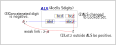
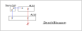
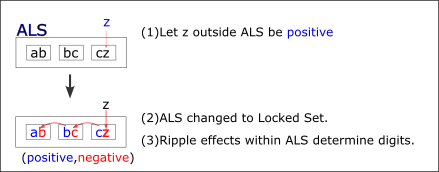
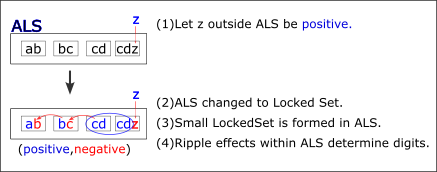

DeathBlossom...アルゴリズム考察（v5)
DeathBlossomアルゴリズムをさらに発展させます。ここでの検討では、 リンク、 ALS、 AIC、 ALS DeathBlossom についての知識を前提とします。
(1) DeathBlossom 基本形
DeathBlossomは、ALSによるリンクを用います。
(*) Stem cellの要素数に等しい数のALSリンクが次の図のように配置されているとします。
ある数字(図ではz)を真と仮定すると、全てのALSをLockedSetに変え、Stem cellの候補がなくなります。 従って、ある数字(z)を”真と仮定”は誤りとなり、zは偽となります。

(2) DeathBlossom 改良の方法
DeathBlossomアルゴリズムの仕組みと、改良の方法を示します。- 弱リンク アルゴリズム
ALSリンクは弱リンクです。弱リンクであれば、アルゴリズムは成立します。すなわち、セル内リンク、セル間リンク、AIC も弱リンクであり、 およびこれらを組み合わせる アルゴリズム が構成できます。また、その他の弱リンクにも拡張できます。 - 連結リンク
弱リンクであれば、DeathBlossom は構成できます。このときの弱リンクは、単一リンクには限りません。Forceアルゴリズムと同じで、連結リンクの弱リンクでも可能です。
(GNPX v5では。連結リンクを含む DeathBlossom を搭載します。) - ALSのLockedSet縮退による確定
ALS外の数字確定により ALSがlockedSetに縮退するとき、ALS内の要素が確定することがあります。 ALS内の1要素が確定する、ALS内要素の部分集合でLockedSetが生じる、またその確定が波及的に他の要素を確定する、 などの効果が発生することがあります。いわば小規模な数独アルゴリズムが作用することがあります。
いくつかの例を示します。
 